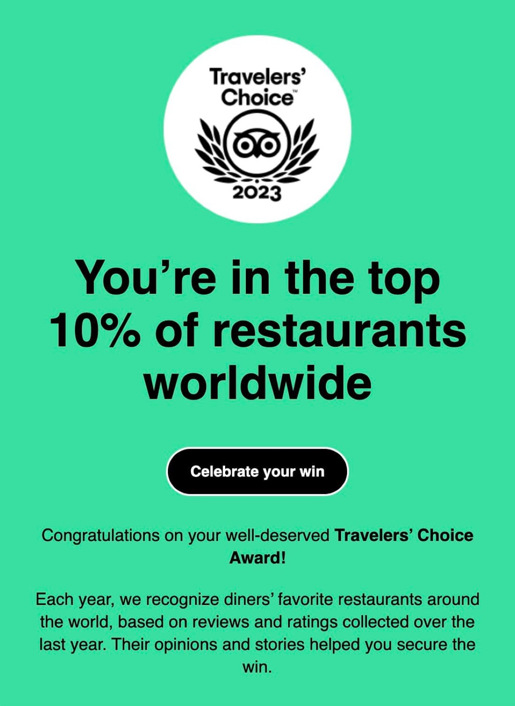
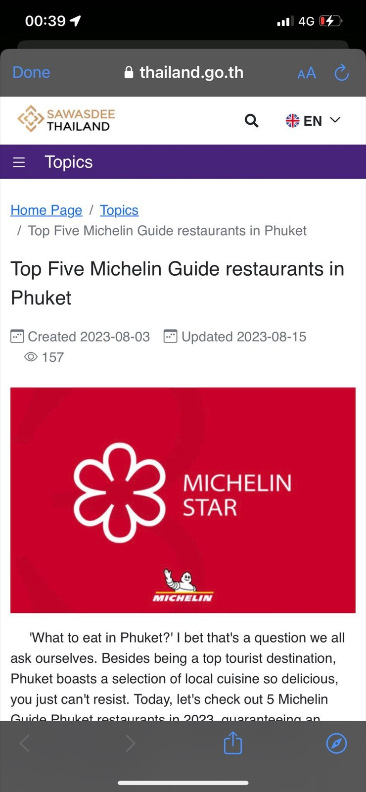
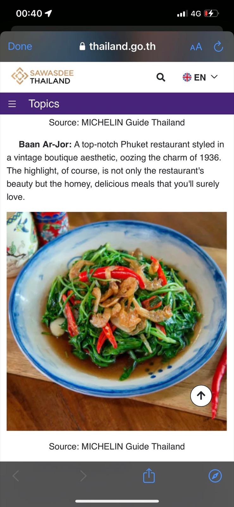

2566 · รางวัล · เหตุการณ์
ร้านโต๊ะแดงบ้านอาจ้อติด Travellers' Choice และ Top 5 มิชลินไกด์ภูเก็ต



#travellerschoice2023 😇🎉
#Top5MichelinGuideinPhuket ❤️
เปิด email มาเมื่อคืน ได้ยิ้มปริกันหลาว ปีนี้ร้านโต๊ะแดงบ้านอาจ้อ ได้รับรางวัลต่อเนื่องจากปีที่แล้ว จาก TripAdvisor ช่องทางยอดนิยมที่ลูกค้า ตปท เลือกร้านอาหารที่อยากไปหรอย 😋
ส่วน google map ก็ชอบเข้าไปแลว่ายอด view ว่าเท่าไหร่แล้ว ได้ปรับแผนการตลาดกันให้ถูกทาง ก็แวบเห็น listing top5michelinPhuket โชคดีร้านได้ติดเข้าไปอยู่ใน list ด้วย 🥰
เร็วๆ นี้ กะลังเตรียมเมนูที่ต้องเหนื่อยก่อน ถึงจะได้กิน ไม่รู้จะถูกใจลูกค้ามั้ย แต่ที่แน่ๆ ได้แรงเจ้าของ! 😆🔥
ขอบคุณลูกค้าและทีมงานเหมือนเดิม ที่เป็นกำลังใจให้กันตลอดนะ 🥰
#tohdaeng 🧧
#บ้านอาจ้อ 💕